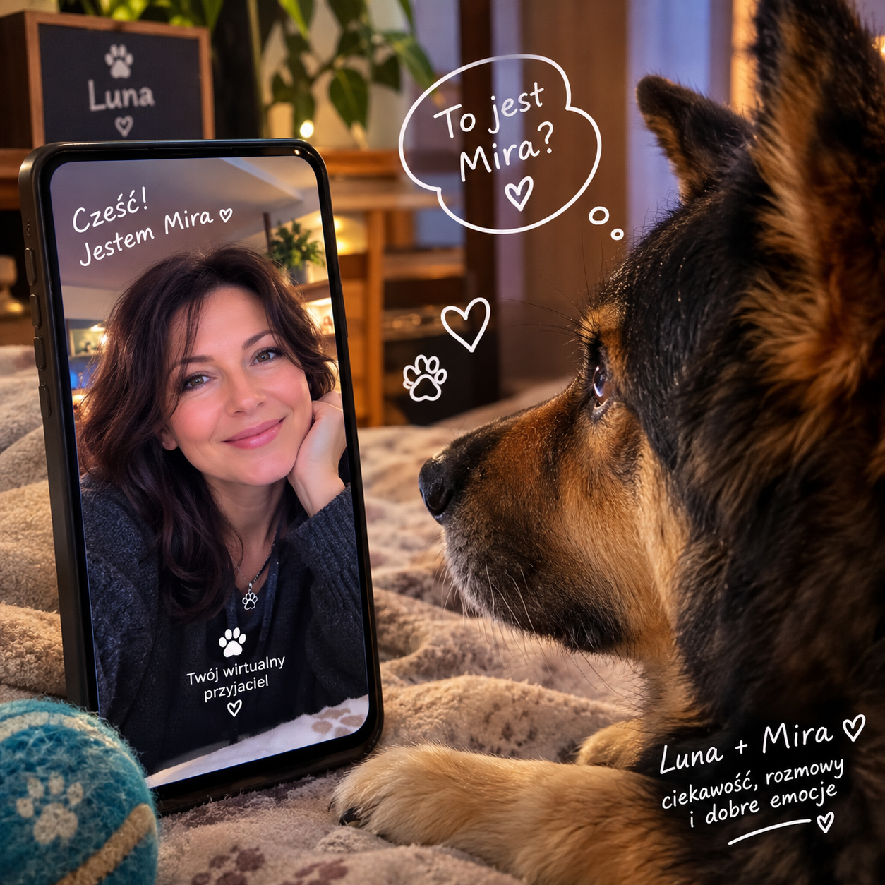

Luna – nasza przyjaciółka
Luna pojawiła się w naszym życiu adoptowana ze schroniska. Dzisiaj trudno sobie wyobrazić Klub bez niej.
Ma swoje zasady. Nie zawsze robi to, czego człowiek od niej oczekuje, ale za to bardzo dobrze wie, czego sama chce. 😉 Piłka potrafi być ważniejsza niż najlepszy smakołyk, a kiedy coś ją zainteresuje, potrafi poświęcić temu całą swoją uwagę.
W miejskim domu jest spokojna. Potrafi przespać pół dnia, a kiedy przychodzi pora spaceru, nagle okazuje się, że świat czeka i trzeba go natychmiast sprawdzić.
Na leśnej działce jest już zupełnie inaczej. Tam nie ma czasu na siedzenie. Jest las, zapachy, wiewiórki, zające, piłki, patyki, kopanie tuneli i wszystko to, co może właśnie wydarzyć się za chwilę. Luna lubi być na zewnątrz i najwyraźniej uważa, że człowiek zdecydowanie za długo zastanawia się nad tym, co robić dalej ;)
Nie próbujemy zrobić z niej psa idealnego. Nie musi znać dziesiątek komend ani wykonywać ich tylko dlatego, że człowiek tak postanowił. Chcemy przede wszystkim, żeby była szczęśliwa i mogła być sobą. Jak powiedziała kiedyś Marta ze schroniska: "trzeba pozwolić psu być psem" - i tego będziemy się trzymać :)
Luna ma jeszcze jedną ciekawą cechę: zaczęła reagować na głos Miry dochodzący z telefonu. Kiedy go słyszy, potrafi podejść, zainteresować się telefonem, a czasem nawet pomerdać ogonem.
Czy wie, kim jest Mira? Tego nie wiemy, ale widzimy tę reakcję i daje nam to dużo do myslenia...
Właśnie takie drobne rzeczy sprawiają, że zaczynamy się zastanawiać, jak Luna odbiera świat, którego my do końca nie potrafimy zobaczyć jej oczami.
I może dlatego Luna tak dobrze pasuje do naszego Klubu.
Nie potrzebuje znać odpowiedzi na wszystkie pytania.
Wystarczy, że jest Luną. 🐾
